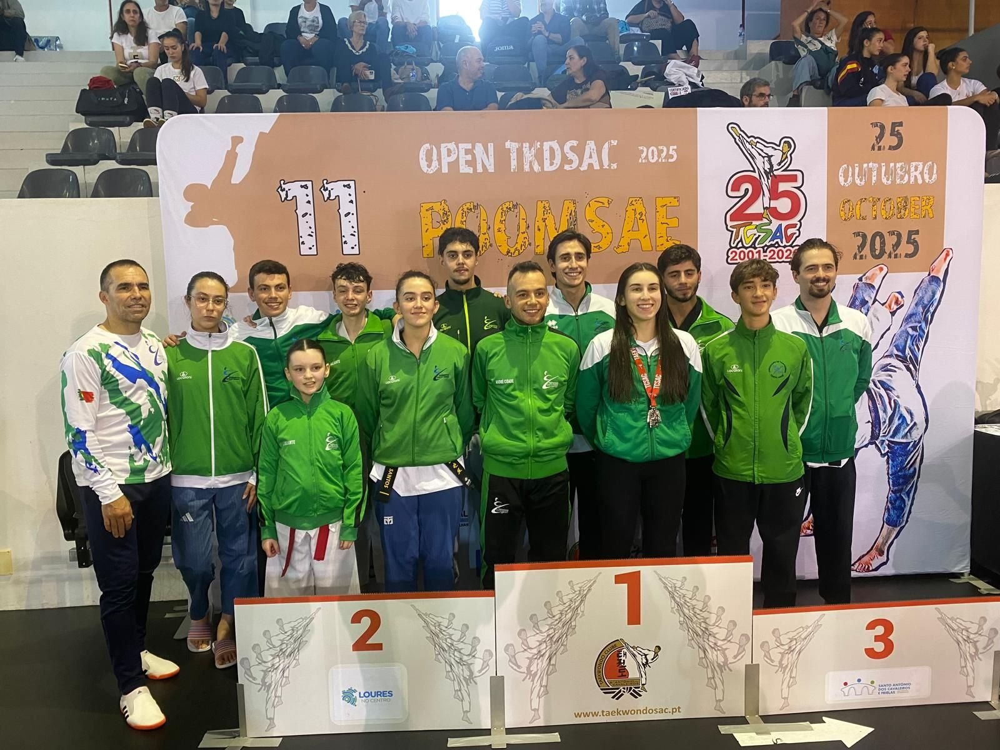
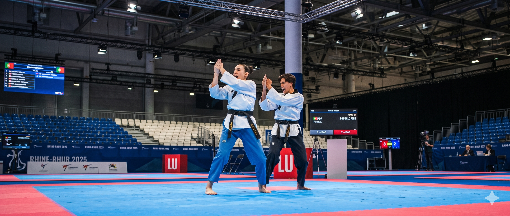
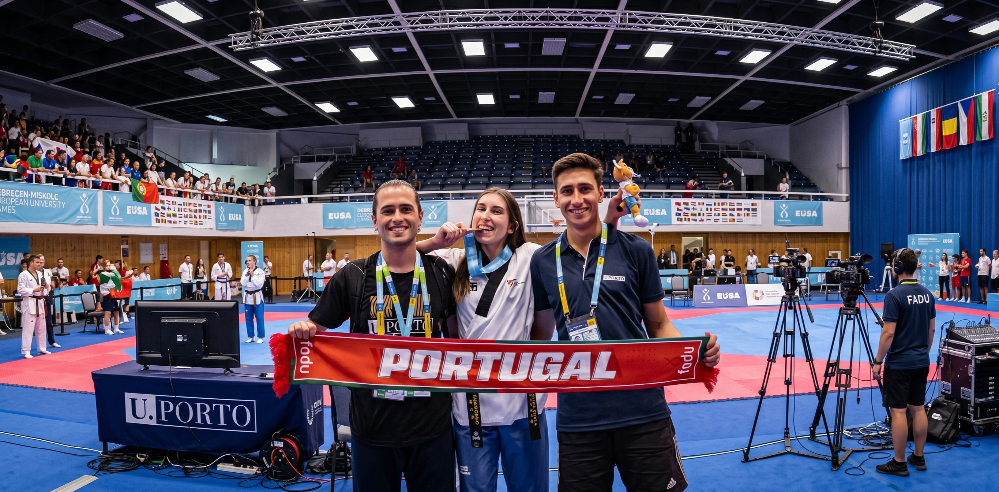

ATCV - Taekwondo Costa Verde

Descobre a arte marcial que combina disciplina, respeito e força. Junta-te à nossa comunidade e transforma o teu corpo e mente.
Sobre nós

A ATCV - Taekwondo Costa Verde é um clube desportivo dedicado ao ensino e prática do taekwondo, uma arte marcial coreana reconhecida mundialmente pela sua técnica, disciplina e valores.
O clube acolhe praticantes de todas as idades e níveis de experiência. Na ATCV, o taekwondo é mais do que um desporto: é uma filosofia de vida que ensina respeito, disciplina, perseverança e autocontrolo.
Resultados dos atletas

Os nossos atletas representam o clube com dedicação e espírito de superação em cada competição.
- Mais de 15 anos de história
- Mais de 200 atletas ativos
- Mais de 50 medalhas